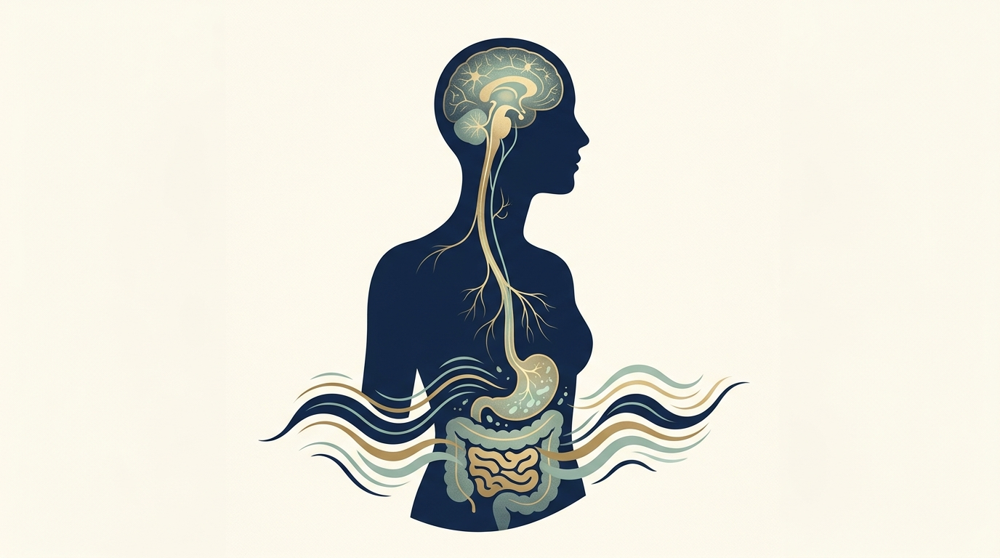

腸閉塞の鍼灸
腸の流れが阻害されて内容物やガスが滞留し、激しい腹痛や嘔吐を起こす緊急性の高い疾患です。


院長YouTube解説・関連動画
腸閉塞の原因は色々ある
腸閉塞の原因は色々あります。中でも多いと言われている原因は手術です。
腹部にある臓器の手術をした後、腸同士や腸と腸壁などがくっつくことがあるのです。腸同士がくっついて、腸が折れたりねじれたりすると腸が塞がってしまうため、腸閉塞を起こしてしまいます。
他にも、大腸がんや寄生虫や腸管に排出された胆石などの異物が腸につまることなどが原因で腸閉塞が起こってしまうこともあります。手術後の癒着の他にも、異常な開口部からの腸の一部の突出や腫瘍で腸閉塞を起こすことも多いです。
新生児や乳児に起きる腸閉塞の原因は一般的に、生まれつきの異常や腸の内容物の硬いかたまり、腸のねじれ、腸閉鎖、腸重積などです。
腸閉塞は、腸が正常に働かない状態を指し、これは消化物やガスが通常通りに通過できなくなる結果をもたらします。
1.閉塞の主な原因：物理的障害
物理的障害による腸閉塞は最も一般的です。これらは外科的手術や腸内にある他の物体が原因で、腸を物理的にブロックします。例えば、腸捻転、腸絞扼、外傷などが該当します。
腸捻転：これは腸が自身でねじれることによって起こります。腸がねじれると、その部分の血流が遮断され、重篤な合併症を引き起こす可能性があります。
腸絞扼：これは腸が体の他の部分、例えば癒着やヘルニアなどで絞り付けられる状態を指します。これも血流を遮断し、腸の損傷を引き起こす可能性があります。
外傷：直接的な腸の損傷、例えば事故による損傷や外科手術の結果、腸閉塞が発生することがあります。
2.腸の動きの障害（パラリティックイレウス）
物理的障害だけが腸閉塞の原因ではありません。腸の正常な動き（蠕動運動）が障害されると、パラリティックイレウスと呼ばれる状態が発生します。これは薬物の副作用、代謝異常、脳卒中、脊髄損傷などにより発生することがあります。
3.腫瘍
腫瘍は腸内で成長し、腸を物理的に閉塞する可能性があります。腫瘍は良性でも悪性でも腸閉塞を引き起こす可能性があります。特に大腸がんは、腸閉塞の一般的な原因の一つとなります。
4.炎症性の腸の病気
クローン病や潰瘍性大腸炎のような炎症性の腸の病気は、腸の炎症とともに発生し、腸の組織を腫らせ、最終的には閉塞を引き起こす可能性があります。
5.外来体の摂取
特に小児において、食物や玩具の部品などの外来体の誤飲は、腸閉塞の一般的な原因となります。
6.感染症
特定の感染症、特に結核や回虫症は、腸閉塞を引き起こす可能性があります。
以上のように、腸閉塞の原因は多岐にわたります。
腸閉塞の主な症状は、痙攣性の腹痛、腹部の膨張、嘔吐など
腸閉塞の主な症状は、痙攣性の腹痛です。同時に腹部が膨満し、食欲がなくなります。
まず初めにお腹の張りを感じ、次にお腹の痛みを感じ、嘔吐するという順番で症状が現れる人が多いと言われています。腸が完全に閉じてしまうと便秘が起こり、部分的に閉じてしまうと下痢が起こることが多いです。
腸閉塞は、塞がってしまった部分から上に食べ物や胃液などの消化物がたまっていってしまうため、多くの場合は吐き気や嘔吐といった症状が見られます。
痛みの程度には個人差があります。軽い痛みしか感じない人もいれば、非常に激しい痛みを感じる人もいるのです。
腸管の血流障害が起きると、体の中へ血液を供給することが不十分になり、意識障害などが現れるショック症状があることも多いです。腸に穴が開いてしまった場合は、緊急手術が必要です。腸閉塞は場合によって命に関わることもある病気なのです。
腸閉塞は、消化管のある部分が部分的にまたは完全に閉塞され、食物や液体が通過できなくなった状態を指します。この状況は重大な問題を引き起こす可能性があります。腸閉塞の症状は一般的に急性であることが多く、速やかな医療介入が必要となります。以下に、腸閉塞の主な症状について詳しく説明します。
1.腹痛
腸閉塞の最も一般的な症状の一つは、腹痛です。閉塞部位の近くで発生するこの痛みは、しばしば強く、一貫性があります。腸の蠕動運動による強制的な試みが行われる際には、痛みは激しくなることがあります。
2.腹部膨満感とガス
腸閉塞は、消化物やガスの通過を妨げます。その結果、腹部の膨満感や不快感が生じることがあります。また、閉塞の上流ではガスが溜まることが多く、これが腹部の膨満感やガスの排出不良を引き起こします。
3.便秘と排便困難
腸閉塞は、固形物の通過を妨げるため、便通が悪くなることが一般的です。これは完全閉塞では明らかな便秘となり、部分的閉塞では排便困難となります。
4.吐き気と嘔吐
閉塞は消化物の正常な通過を阻害するため、しばしば吐き気を感じ、場合によっては嘔吐を伴うことがあります。嘔吐物は、飲食物の残渣、胆汁、さらには閉塞が下部にある場合には便のような物質を含むことがあります。
5.腹部の異常な膨らみ
部分的または完全な腸閉塞は、腹部の一部が不均一に膨らむことを引き起こすことがあります。これは閉塞の上流に消化物やガスが蓄積する結果として生じます。腹部を触ると、硬く感じることがあります。
6.体重減少
長期的な腸閉塞や繰り返す腸閉塞の場合、体重減少を経験することがあります。これは、食物の摂取や吸収が妨げられるためです。
7.発熱
発熱は腸閉塞の一般的な症状ではありませんが、腸の壊死や感染が生じると発熱を引き起こすことがあります。
8.衝撃症状
重度の腸閉塞は、最終的には腸の壊死や穿孔を引き起こす可能性があり、これにより衝撃症状（低血圧、冷たくて湿った皮膚、混乱など）が発生します。
これらの症状は、全ての人が腸閉塞を経験するわけではありません。症状は閉塞の程度、位置、持続時間などにより異なります。
腸閉塞の改善方法には、大きく分けて2種類あります。腸閉塞の症状の程度は個人差が大きいです。そのため、症状の程度によって、改善方法も違うのです。
1つ目は、絶食と点滴です。症状が軽い場合は絶食をし、点滴で栄養を補給して様子を見ます。腸管の中の圧力を下げるために、管を使って腸にたまっている食べ物や消化液などを出すこともあります。
2つ目は手術です。絶食や点滴をしても症状が改善しない場合や、症状が重い場合は、手術で改善を行います。
手術には、癒着を剥がしたり絞扼しているひも状の組織を切り取ったりなど閉じてしまった部分を外すことで改善するケースや開腹手術をして詰まっている部分の腸管を切りとり正常な部分をつなげることで改善するケースなどがあります。
症状に合わせて、手術を行い改善に取り組むのです。
腸閉塞は、消化管の一部が部分的または完全に閉じて、食物や液体が通過できない状態を指します。腸閉塞は時に重篤であり、適切な治療が不可欠となる状況です。以下に、腸閉塞の主な改善法について詳しく説明します。
1.保存的方法
全ての腸閉塞が直ちに手術を必要とするわけではありません。軽度であったり、特定の病態に対しては、最初に保存的方法を試みることがあります。これには、絶食、輸液補給、腸内容物の吸引などが含まれます。ただし、このアプローチが効果的でない、または患者の症状や状態が悪化する場合、手術が必要となることがあります。
2.外科手術
多くの腸閉塞の場合、外科手術が最終的な方法となります。手術は、閉塞の原因を直接的に解消することを目指します。
腸捻転や腸絞扼：これらの状況では、手術は閉塞の解除と、必要に応じて腸の再配置や修復を行います。
腫瘍：腸閉塞を引き起こす腫瘍の場合、外科手術は腫瘍の除去を目指します。これは、悪性腫瘍に対する改善の一部でもあります。
瘢痕組織や癒着：外科的手術は、これらの物理的な障害を除去し、腸の自由な動きを可能にすることを目指します。
手術は一般的に開腹手術または腹腔鏡手術の形で行われます。選択される手術法は、全般的な健康状態、閉塞の原因と位置、手術の緊急性などによります。
特定の腸閉塞、特にクローン病や潰瘍性大腸炎のような炎症性の腸の病気に起因するものでは、薬が有用となることがあります。ステロイド、免疫抑制薬、生物学的製剤などが使用され、炎症の管理と腸の閉塞の解消を試みます。
4.栄養法
腸閉塞による食事制限や栄養不足の場合、特定の栄養補給法が必要となることがあります。経口または経管栄養補給、あるいは重度の場合は静脈栄養補給が行われることがあります。
5.腸ステント
腸閉塞を引き起こす悪性腫瘍の一部では、腸ステントの挿入が選択肢として選ばれることがあります。ステントは、閉塞部位を力学的に開放し、腸の通過を再確立します。これは、手術が困難または不可能な患者、あるいは一時的な解決策として使用されることがあります。
腸閉塞の改善方法は、その原因、重症度、患者の全般的な健康状態に基づいて個別化されます。
便秘は腸閉塞につながりやすいです。日頃から便秘を予防することを意識しましょう。便秘予防を意識した食生活を送ったり、決まった時間に排便をする習慣をつけることなどが便秘予防につながり、腸閉塞の予防にもなります。
適度な運動をすることや食べ過ぎないこと、水分をきちんと摂ることも大切です。食べ過ぎや早食いはしないように気をつけ、運動をする習慣をつけると良いでしょう。
排便が急に止まったなど何か不安なことがある場合は、病院に相談に行くことをお勧めします。
腸閉塞の改善例
腸閉塞は消化管の一部が部分的にまたは完全に閉じ、食物や液体が通過できない状態を指します。実際のプロセスは具体的な状況や腸閉塞の原因によりますが、一般的な改善の進行について、以下に実例を挙げて説明します。
ケーススタディ1：腸絞扼による腸閉塞
70歳の男性が急性の腹痛を伴って救急部に搬送されました。症状は3時間前から始まり、吐き気と頻繁な嘔吐を経験していました。物理的な評価では、腹部は膨満しており、触った時に痛みを示しました。画像で小腸の部分的な閉塞が確認されました。この結果から、外科医は腸絞扼を疑い、直ちに手術を決定しました。手術では、絞扼された部分が確認され、腸の再配置が行われました。その後、順調に回復し、手術後数日で通常の食事を再開しました。
ケーススタディ2：癒着による腸閉塞
52歳の女性が、過去に開腹手術を数回経験していました。最近、慢性的な腹痛と食欲不振に悩まされ、しばしば便秘と吐き気を感じていました。これらの症状から、腸閉塞の可能性が疑われました。CTスキャンの結果、小腸の一部に閉塞が確認され、これは過去の手術による癒着が原因と判断されました。この場合、保存的方法を試みることになり、一時的に絶食となり、輸液と薬を行いました。それにもかかわらず、症状が改善しないため、手術を決定しました。
腹腔鏡手術にて、癒着による閉塞が確認され、その部分を剥離しました。手術後、症状は大幅に改善し、1週間後には通常の食事を再開しました。
ケーススタディ3：クローン病による腸閉塞
30歳の男性は、クローン病の判断を受けており、近くに痛みと便通の異常を報告しました。症状の進行と画像から、腸閉塞の可能性が示唆されました。初期には、ステロイド薬を増量し、一時的に絶食状態にしました。しかし、この改善による改善が見られなかったため、外科的介入が必要と判断されました。
手術では、狭窄部位を切除し、健康な腸同士を繋ぎました（小腸切除術と吻合術）。手術後、症状が改善し、1週間後には通常の食事を再開しました。その後のフォローアップでも、腸閉塞の再発は見られませんでした。
これらのケーススタディは、腸閉塞が多様な原因で発生し、それぞれに最適な改善法が異なることを示しています。最も重要なことは、適切な判断を行い、早期に改善を開始することで、症状を改善し、生命を脅かす合併症を防ぐことです。
▼ 詳しく知りたい項目だけタップして開けます（全項目の医学解説を収録）
01. 原因とメカニズム
なぜ症状が起きるのか・鍼灸の作用機序を読む
▼
01. 原因とメカニズム
なぜ症状が起きるのか・鍼灸の作用機序を読む
腸管の通り道が途中で塞がれ、食物・消化液・ガスが滞留する状態で、物理的に詰まる機械的閉塞（単純性・複雑性）と腸の動きが止まる機能的閉塞（麻痺性イレウス）に大別されます。最多の原因は腹部手術後の癒着で、ほかに腸捻転、ヘルニアによる絞扼、大腸がんなどの腫瘍、炎症性腸疾患、異物、感染症、薬剤副作用などが挙げられます。
なぜ鍼灸で改善へ向かうのか？（作用機序の図解）
腸閉塞に対する鍼灸は、脳腸相関と迷走神経反射による胃腸運動の調整機序を通じて、お体本来の回復力を引き出します。
胃腸機能と深く結びつく四肢・腹部の経穴を刺激し、体性感覚神経から中枢へ信号を送ります。
脳幹を経由した体性-内臓反射により、副交感神経（迷走神経）経由で胃腸の働きを調整します。
弱まったぜん動を促す一方、下痢型の過剰な収縮や内臓知覚過敏は穏やかに鎮静します。
ストレスで乱れにくい胃腸の土台を整え、胃もたれ・便通異常・吐き気の軽減を目指します。
02. よくあるお悩み
このような症状はありませんか？（4項目）
▼
02. よくあるお悩み
このような症状はありませんか？（4項目）
- ✓波のある痙攣性の腹痛や異常なお腹の張りがある
- ✓吐き気や嘔吐が続き、便やガスが出にくい
- ✓腹部手術の既往があり、再発や癒着が心配である
- ✓発熱や冷汗、ふらつきなど急激な体調悪化がある
03. 当院の施術アプローチ
施術の進め方・改善のポイントを見る
▼
03. 当院の施術アプローチ
施術の進め方・改善のポイントを見る
04. ツボ詳細・セルフケア一覧
潰瘍性大腸炎・クローン病（IBD）の腸管自律神経ツボ図解（6穴）
▼
04. ツボ詳細・セルフケア一覧
潰瘍性大腸炎・クローン病（IBD）の腸管自律神経ツボ図解（6穴）
実際の施術ではお一人おひとりの体質・症状に合わせて選穴しますが、炎症性腸疾患（潰瘍性大腸炎・クローン病）・過敏性腸症候群の併用ケアの臨床でよく用いられる代表的なツボの目安です。
| ツボ名 | 位置の目安 | 主な狙い | セルフケアの注意点 |
|---|---|---|---|
| 中脘（ちゅうかん） | みぞおちとおへその中間 | 胃腸の蠕動バランス・食後の張り軽減 | 腹痛が強い活動期は押さず温めるだけにします。 |
| 天枢（てんすう） | おへその左右それぞれ指3本分外側 | 大腸の運動調整・下痢や腹鳴の緩和 | 腹部に強い圧痛がある場合は遠隔穴を優先します。 |
| 関元（かんげん） | おへそから指4本分下 | 下腹部の冷え改善・迷走神経を介した腸管鎮静 | 穏やかな温灸が特に相性の良いツボです。 |
| 足三里（あしさんり） | 膝の下外側、指4本分下 | 迷走神経抗炎症反射の活性化・栄養吸収サポート | 日常のセルフケアに最も安全な遠隔穴です。 |
| 上巨虚（じょうこきょ） | 足三里からさらに指4本分下 | 大腸の「下合穴」として腸管機能と排便リズム調整 | すねの外側を優しく押してほぐします。 |
| 三陰交（さんいんこう） | 内くるぶしの上から指4本分上 | 自律神経・睡眠・ストレス性の腸過敏緩和 | 下痢が続く時期の冷え対策にも役立ちます。 |
05. 医学的根拠・国際査読論文（PubMed / Cochrane）
科学的エビデンス・出典リンク一覧（4件）
▼
05. 医学的根拠・国際査読論文（PubMed / Cochrane）
科学的エビデンス・出典リンク一覧（4件）
国際的な医学データベース（PubMed・Cochrane等）で報告されている炎症性腸疾患（潰瘍性大腸炎・クローン病）・過敏性腸症候群の併用ケア領域の代表的な査読済み鍼灸研究をまとめています（標準治療との併用や研究上の限界を含めて正確に掲載）。
| 年・研究デザイン | 対象・規模 | 主な結果 | 限界・出典 |
|---|---|---|---|
| 2016年 大規模多施設RCT | 慢性重症機能性便秘 1,075名（15病院） | 週平均完全自発排便回数が電鍼+1.76 vs シャム+0.87（P<0.001）、20週追跡時も持続（P<0.001）。 | 20週以降の長期経過は未評価。 Ann Intern Med (PMID: 27618593) |
| 2020年 多施設RCT | 機能性ディスペプシア（PDS）278名（5施設） | 4週時点の総合改善反応率83.0% vs シャム51.6%（P<0.001）、終了後12週間維持。 | 16週脱落率18%・施術者盲検化不可。 Ann Intern Med (PMID: 32422066) |
| 2025年 多施設RCT | 下痢型過敏性腸症候群（IBS-D）280名（6病院） | 6週時点の複合反応率57.9% vs シャム41.4%（RR 1.40, P=0.008）、重篤な有害事象なし。 | IBS-D限定・中国多施設試験。 Gastroenterology (PMID: 40441496) |
| 2017年 メタ解析 | 胃食道逆流症（GERD）12 RCTs（n=1,235） | 鍼＋西洋薬併用は西洋薬単独より総合改善優位（RR 1.17, p=0.03）、再発率低下（RR 0.42, p<0.001）。 | 組入れ試験の質が低く標準治療との併用が前提。 Acupunct Med (PMID: 28689187) |
参考文献・出典
- 2016年 大規模多施設RCT（慢性重症機能性便秘 1,075名（15病院））— Ann Intern Med (PMID: 27618593)
- 2020年 多施設RCT（機能性ディスペプシア（PDS）278名（5施設））— Ann Intern Med (PMID: 32422066)
- 2025年 多施設RCT（下痢型過敏性腸症候群（IBS-D）280名（6病院））— Gastroenterology (PMID: 40441496)
- 2017年 メタ解析（胃食道逆流症（GERD）12 RCTs（n=1,235））— Acupunct Med (PMID: 28689187)
06. よくある質問（FAQ）
よくあるご質問を見る（2件）
▼
06. よくある質問（FAQ）
よくあるご質問を見る（2件）
Q. 腹痛とお腹の張り、吐き気があるときはすぐ病院へ行くべきですか？
はい。腸閉塞は血流障害や穿孔を起こすと命に関わるため、強い腹痛・嘔吐・便やガスが出ない症状がある場合は速やかに医療機関を受診してください。
Q. 術後の腸閉塞予防として日常でできることはありますか？
食べ過ぎを避け、水分摂取や規則正しい排便習慣、適度な運動で日頃から便秘を防ぐことが大切です。安定期の体調管理には自律神経ケアも役立ちます。
あわせて読まれる関連疾患（消化器のお悩み）
椎体・肛門・気管食道・橈骨・腎の複数徴候を合併する先天性疾患。専門医管理下で筋緊張や疲労を補完します。
キノホルムによる薬害で生じた神経障害（新規発症なし）。専門医管理下で慢性期のしびれや筋緊張を補完ケアします。
飲酒が主因でない脂肪肝に炎症・線維化が加わった状態。食事と運動での減量を軸に、倦怠感や生活リズムの乱れを鍼灸で支えます。
長期の過剰飲酒で脂肪肝から肝炎・肝硬変へ進む肝障害。専門医管理と禁酒を基本に疲労や自律神経を整えます。
胃の一部が横隔膜の食道裂孔から上方へ飛び出す状態。医療機関での管理と並行し背部緊張や自律神経を整えます。
ガストリノーマによる胃酸過剰で難治性潰瘍を起こす疾患。専門医の治療を第一に、体調・自律神経を補完します。
CLINICAL RECOVERY CASES
✨ 実際の臨床改善事例・回復経過を見る
銀座本院をはじめ各院での実際の改善事例を症状別に絞り込んでご確認いただけます。
おひとりで悩まず、まずはご相談ください
銀座本院・川口・大宮・横浜・博多・田無の各院でご予約を承っております。